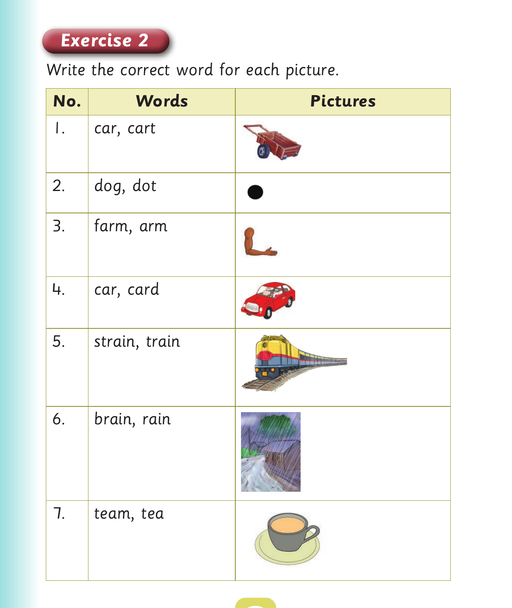
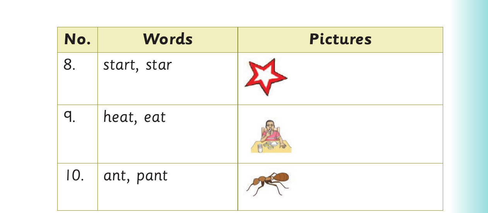

Exercise 2 - choose the correct word for each picture
(d) A party was in this part of the town. (e) I saw a tent with ten men in it.

Exercise 2 Write the correct word for each picture. No. Words Pictures 1. car, cart 2. dog, dot 3. farm, arm 4. car, card 5. strain, train 6. brain, rain 7. team, tea
Exercise 2 - continued

No. Words Pictures 8. start, star 9. heat, eat 10. ant, pant